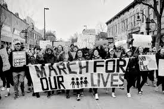

#MeToo
#MeToo highlights the experiences of sexual harassment
and works to de-stigmatize conversations about about sexual misconduct in the workplace.
#SayHerName
#SayHerName is intended to serve as a resource for the media,
organizers, researchers, policy makers, and other stakeholders
to better understand and address Black women’s experiences of profiling and policing.
#LoveWins
#LoveWins celebrates the decision to legalize gay marriage,
while also fighting the injustices that the LGBT+ community faces,
and understanding that the legalization of gay marriage isn’t the end of the discrimination and oppression
against same sex couples.
#BlackLivesMatter
In 2013, following the murder of 17 year old Trayvon Martin,
three radical Black organizers—Alicia Garza, Patrisse Cullors, and Opal Tometi—
created a Black-centered political movement toraise global awareness
on the murders of African Americans by citizens and law enforcement.
#DefendDaca
#DefendDACA is a hashtag that brings awareness to the lost opportunities of young immigrants
to legally finish their education and work in the united states.
DACA(Deferred action of childhood arrivals) is an organization created under the Obama administration and was mutually popular among both parties,
however under the Trump administration DACA was repealed.

#marchforourlives
#MarchForOurLives: The March For Our Lives was an event turned movement raise awareness for gun control. This event was organized by the students of Stoneman Douglas High school in Parkland,Florida. After the tragic event of the Parkland shooting in February 14, 2018, where 17 students and staff were brutally murdered by an AK-47,students organized a march in Washington D.C where talked about the importance of gun control and how congress needs to take students lives more serious and stop focusing on money.
#DefendRoe
#DefendRoe helps women have legal and safe abortions.
The decision to take away safe abortions and make budget cuts from Planned Parent are often made
by people who are not affected by that decision.
Women often find unsafe ways the have abortions such as using clothes hangers and drinking bleach.
#IdontMind
#IDontMind is a mental health awareness program, working to break down the barrier of stigma and to bring help to those that need it.
Our goal is to get people talking about their minds, and to generate positive messaging about mental health.
#Takeaknee
#Takeaknee supports the decision of football players to kneel during the National Anthem
at professional football games.
Football players take a knee to bring to light the outstanding rates of police brutality
against the African-American community
#RedforEd
#RedforEd is a movement demanding fair pay for teachers.
#RedforEd pushes for funding decisions for better school needs.
#Flint FWD
#Flint Fwd is a movement created by the people of Flint,
Michigan to help spark change due to the water crisis.
#Fem2
#Fem2 one of the earliest feminist hashtags to gain mainstream attention.
It was used first in 2008 by twitter user @blogdiva and popularized by Niambi Jarvis (@hiyaahpower).
Used in conversation about the future of feminism.